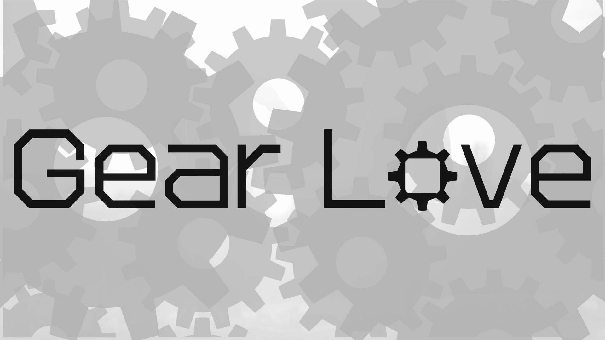
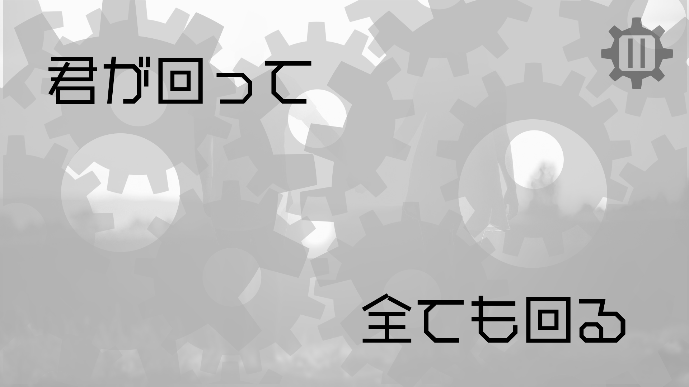

概要
大学の学生主体の作品展示会「卓展」2019で制作しました。
webサイトを制作するプロジェクトと音楽を制作するプロジェクトの2つに所属し、web×音楽の作品にしました。
楽曲に合わせて歌詞が自動アニメーションで表示される、ミュージックビデオのようなサイトです。
制作期間
2019年5月〜8月
使用技術
HTML / CSS / Javascript / jQuery / illustrator / Photoshop / Logic Pro X
コンセプト
参加したwebプロジェクトのテーマが「あそびごころのあるUXデザインを取り入れたサイト」でした。
また自分は別のプロジェクトにも参加しており、そこでは作曲をしました。
別々の2つのプロジェクトだけど世界観の共通した作品にしたいと思い、
リリックビデオと呼ばれる曲の歌詞が動画内に登場するものをwebサイトでインタラクティブ要素を使って表現しました。
テーマ・工夫点
「歯車」をテーマにしました。スクロールすると左右の大きさが異なる歯車が噛み合いながら回転してページが進みます。

